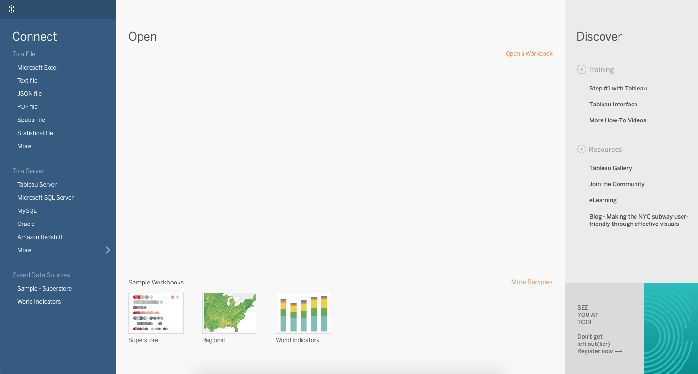
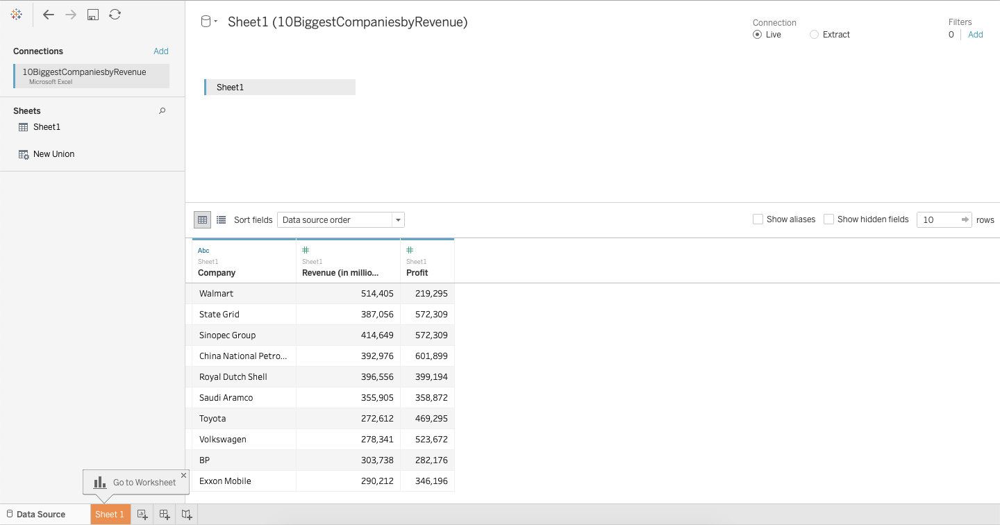
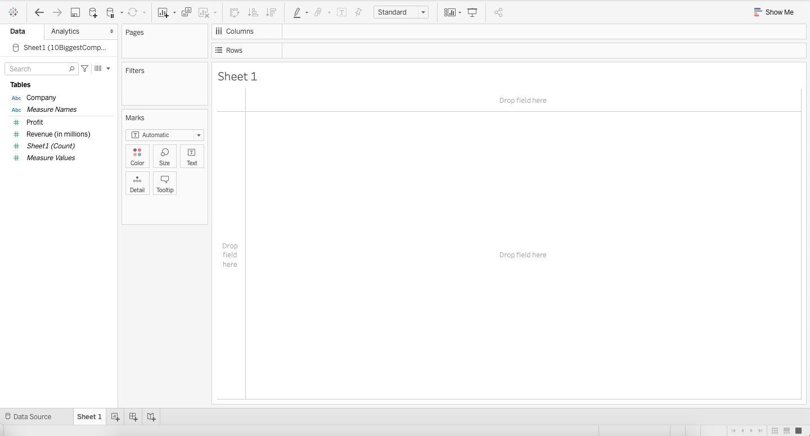
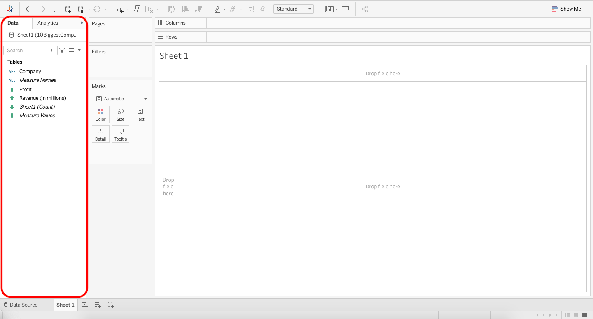

Creating Visualizations with Tableau#
Tableau is commercial (i.e., you must pay for it) software that helps you to easily create professional looking visualizations. Although Tableau allows you to create visualizations with the click of a button, this ease of use comes with a huge drawback. It is so easy to click and drag variables, that if you do not understand exactly what you want your end product to be, it is easy to end up with a visualization that is not very useful or even worse completely wrong!
This drawback is why the unit is structured to teach you how to create the detailed parts of each visualization in Python before jumping into a software designed for visualization. With the knowledge you gained from creating visualizations from scratch, you will now be a much more powerful user of Tableau, which will be incredibly useful in the workplace.
When you are ready to create a visualization, you should first make a guess about how the visualization will appear. In other words, you should have an expectation before you create a graph. After you create the graph, it should not surprise you. If it does, then you should check whether you created the graph correctly. If you just create a visualization without thinking first, your resulting graph is likely to be wrong.
This section will cover how to create each of the eight visualization types discussed earlier in the unit. The next section introduces you to some basic aspects of Tableau, so if you are familiar with Tableau, you can skip ahead to the following section.
Tableau Basics#
Initial Screen#
Once you have downloaded Tableau (instructions are on Canvas), and opened up the application, you should see the following screen. Note that if you have worked in Tableau previously, you may see prior projects under the “Open” header.

Importing Data#
Tableau is software that allows you to work with data and create visualizations. Therefore, in order to begin using Tableau, you will need to connect Tableau to a file with data. On the top left hand side of the initial screen you can see the word “Connect”.
Below the word “Connect” there are several file types that Tableau can use. Based on the data file you are using, you can click the appropriate file type under the “Connect” header. Once you select the file type, you can navigate to the file and select the exact data file you wish to use.
Tableau will import the file you selected. The next screen you will see is the Data Source tab (see screenshot below). At the bottom left of this screen you can see the tab title “Data Source”. This screen allows you to check whether your data imported correctly. The name of your file will be listed under “Connections” at the top left, and the data will be displayed on the lower half of the screen. You can see how many variables were imported (in the example below there are three variables: Company, Revenue(in millions), and Profit). You can also scroll through the rows to spot check that the data imported correctly.
After you have visually checked your data, you can move to a Tableau worksheet by selecting the “Sheet 1” tab at the bottom left.

Tableau Worksheets#
Tableau worksheets are where visualizations are created. In this class, when creating visualizations, we will spend most of our time in Tableau worksheets. A blank worksheet looks like the below screenshot. Let’s talk about the various characteristics you will see in the worksheet.
The actual visualization is presented in the white rectangle where you see the title “Sheet 1”. Everything else around that rectangle is used to create the visualization.

Data Characteristics#
Let’s talk about the data tab on the left hand side of the worksheet, outlined in red on the left below:

Dimensions vs. Measures#
Tableau takes your variables and categorizes them as either dimensions or measures.
Dimensions are qualitative values. Dimensions can be used to split up your data into things like categories. Examples of dimensions are customers, item numbers, identification numbers, countries, and names.
Measures are quantitiative values. Measures have numeric data and each number represents its value. Measures can be aggregated. That is, you can obtain the sum of a measure.
Tableau sometimes confuses measures and dimensions. For example, item numbers or identification numbers will sometimes be imported as measures, even though they are dimensions. Tableau does this because it sees numerical data and interprets this as quantitative values that can be summed, but with item numbers the numerical values cannot be aggregated.
You can convert between dimensions and measures by right clicking on the variable and choosing “convert to dimension” or “convert to measure” whichever you intend to convert the variable to. You can also click on a variable and drag it from one category to the other.
Depending on which version of Tableau you have downloaded on your computer, your data tab might look slightly different. Older versions of Tableau separate dimensions and measures more clearly. In the image above dimensions and measures are separated by a grey line. In the image, Dimensions are above the grey line (Company and Measure Names), and Measures are below the grey line (Profit, Revenue (in millions), Sheet1 (Count), Measure Values). If you convert a dimension to a measure or a measure to a dimension the item will move to the other side of the grey line.
Green vs. Blue Items#
Though it is hard to see in the screenshot above, each variable is either green or blue. The color indicates whether the variable is discrete or continuous. Blue indicates a discrete field and green indicates a continuous field. Tableau treats continuous and discrete fields differently. For example, when you use a discrete field as a row or a column, each unique data item in the field is listed as the columns or rows, so you see the name of each data item. When you use a continuous field as a row or a column, an axis is displayed from the lowest amounts to the highest amounts in your data.
Most of the time Tableau correctly assigns your variables as either discrete or continuous; however if your data is not doing what you intend it to do, this would be something to check for. Similar to above, one common example of when Tableau mixes up the discrete and continuous variables is when it is dealing with numerical ID numbers like SKUs, item numbers, or any numerical representation of an individual person/item. Because numerical ID numbers seem like they can be aggregated and added together, Tableau assigns this as continuous. However, item number 27184 is not greater than item number 302, and you cannot aggregate the item numbers to be anything meaningful. Therefore these are actually discrete variables.
You can convert between discrete and continuous variables by right clicking on the variable and choosing “convert to discrete” or “convert to continuous” whichever you intend to convert the variable to.
Making Visualizations#
The exact steps for making a visualization depend on how your data is organized. The first step is to make sure your variables are correctly imported into Tableau (use the Data Source tab), and the second step is to have an idea in mind for what you want the visualization to look like. Tableau is useful software, but it can create visualizations that look different than you intend; therefore, having a visualization in mind ahead of time is important for ensuring you obtain the appropriate visualization. Once you’re ready to create the visualization you use Sheets to design your visualization.
To assign a variable to a row or column you can drag the variable from the data section on the left to the columns or rows section on the top of the sheet (see videos in the other unit 2 course notes for demonstrations). Selecting the visualization you want can be done in a number of ways. Using the Show Me tab at the top right will quickly create various types of visualizations. Sometimes this is not available, so you need to create the visualization using the Marks box next to the data section.
In the Marks box, you can use drop downs to select between bar, pie, line, etc. The other boxes for color, size, label, etc. are used to modify and customize your visualization.
Videos creating the eight visualizations we discussed in the earlier unit are provided in the other notebooks in this unit.